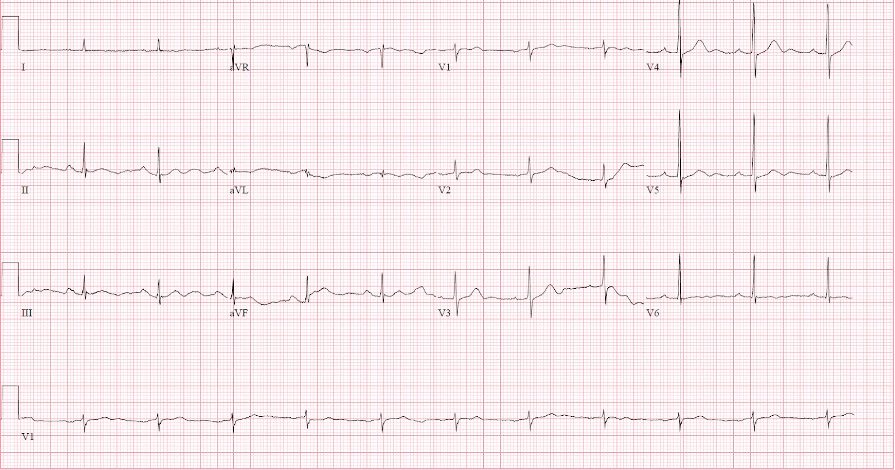
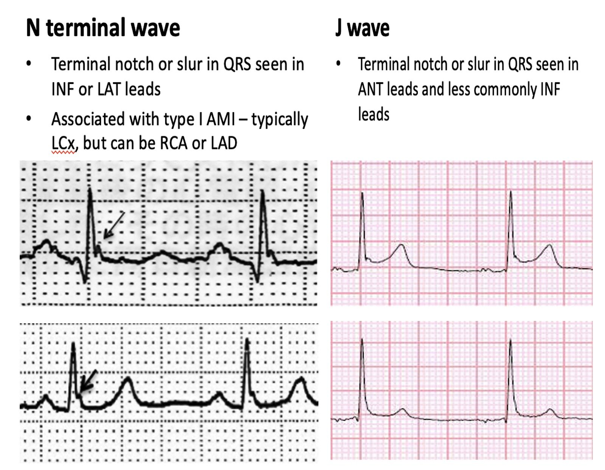
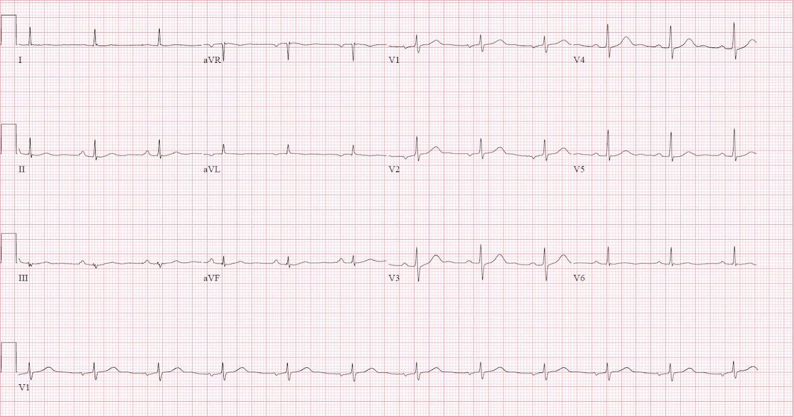
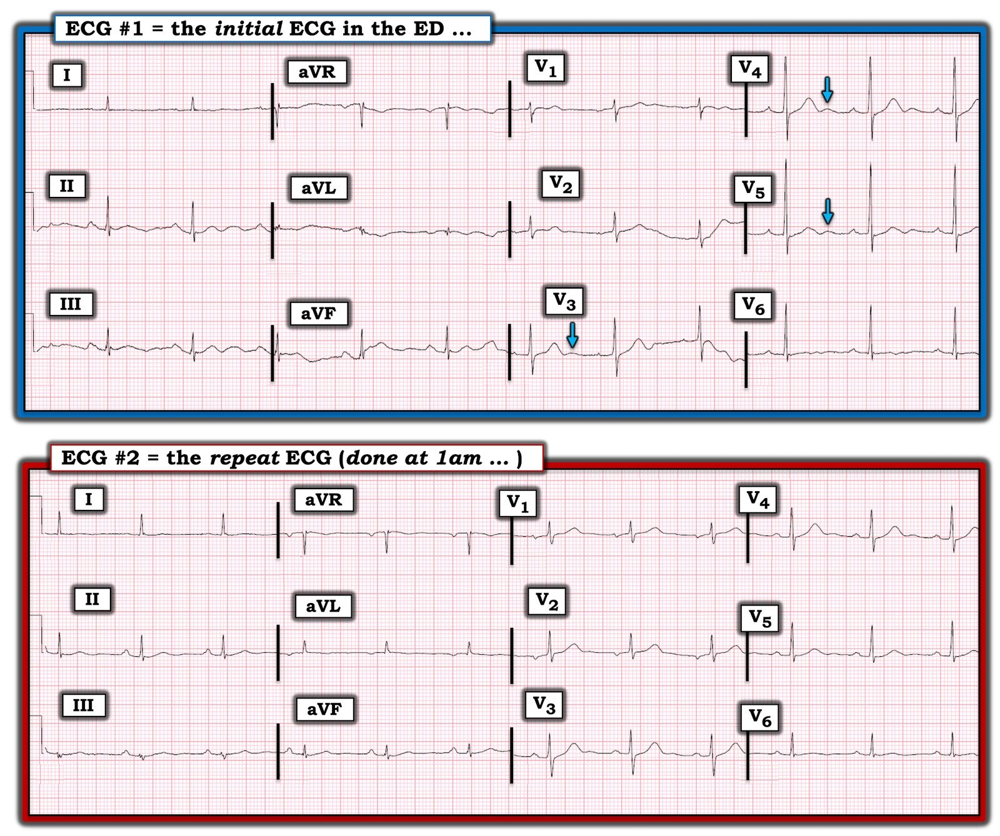

26/03/2022 — Có bằng chứng OMI trên điện tâm đồ này không?
Bản dịch tiếng Việt của bài "Is there evidence of OMI on this ECG?" – Dr. Smith’s ECG Blog. Giữ nguyên toàn bộ 5 hình ảnh của bản gốc.
Đây là một ca khác của Amandeep (“Deep”) Singh, với nhiều bình luận của Smith.
Khoa Cấp cứu, Bệnh viện Highland, Oakland.
Ca bệnh
Bệnh nhân nam 67 tuổi, có tiền sử tâm thần phân liệt và ngày càng
mất lòng tin vào y học phương Tây, đến khám vì đau ngực lan lên
vai phải kèm khó thở kéo dài
24 giờ. Ông cho biết không ngủ được vì đau.
Bệnh nhân có vẻ rất lo lắng về vai phải của mình và
đòi chụp X-quang. Bệnh nhân được chụp X-quang, đồng thời ghi điện tâm đồ và
xét nghiệm troponin.
Trước khi có kết quả troponin, điều dưỡng ghi nhận bệnh nhân
“đi tới đi lui ở cửa, nói rằng muốn về và chờ được gọi điện báo
kết quả xét nghiệm. BN không muốn chờ thêm nữa. Bác sĩ đã được báo.”
Đây là
điện tâm đồ ban đầu.


Bạn có để bệnh nhân này rời khoa cấp cứu (ED) không?
Tôi gửi điện tâm đồ này cho Steve Smith mà không kèm thông tin lâm sàng nào, và ông trả lời:
“ST chênh xuống do thiếu máu cục bộ ở V4 và V5. Vậy nếu đây là người có triệu chứng phù hợp với hội chứng vành cấp (ACS), điện tâm đồ này có giá trị chẩn đoán ACS.”
Phân tích 2 vấn đề: STD ở V4-5, và sóng hoạt hóa muộn (Delayed Activation Wave)
Mặc dù có trôi đường nền, điện tâm đồ ban đầu cho thấy
ST chênh xuống do thiếu máu cục bộ kín đáo ở V4-V5.
1. ST chênh xuống ở V4, V5 (Smith viết):
Meyers và Smith gần đây đã viết bài báo này: Ischemic ST depression maximal in V1-V4 (vs. V5-V6) of any amplitude, is specific for Occlusion Myocardial Infarction (vs. non-occlusive ischemia) (ST chênh xuống do thiếu máu cục bộ tối đa ở V1-V4 (so với V5-V6) với bất kỳ biên độ nào là đặc hiệu cho nhồi máu cơ tim do tắc (so với thiếu máu cục bộ không do tắc))
Trong phân tích này, nếu ST chênh xuống tối đa ở V1-V4, dấu hiệu đó có độ nhạy 96% đối với OMI cần PCI.
Trong 196 ca, STD tối đa ở V5-6; 97 ca trong số này (51%) là do thiếu máu cục bộ (các trường hợp STD tối đa ở V5-6 còn lại là do LVH và các nguyên nhân khác).
48/97 ca (25% của 196, 50% của ST chênh xuống do thiếu máu cục bộ) là do OMI, và 22 trong 48 ca có STEMI thấy được ở các chuyển đạo khác.
Như vậy, trong số các ca STD do thiếu máu cục bộ ở V5-6 không do STEMI rõ ràng, 26 trên 75 ca, tức khoảng 1/3, là do OMI kín đáo. Phần STD do thiếu máu cục bộ còn lại là do thiếu máu cục bộ dưới nội tâm mạc.
Nói cách khác, nếu ST chênh xuống do thiếu máu cục bộ tối đa ở V5, V6, mà không có STEMI ở chỗ khác, thì OMI kín đáo như vậy chỉ có mặt ở khoảng 1/3 số ca; 2/3 là thiếu máu cục bộ dưới nội tâm mạc.
Tuy nhiên, chúng ta còn có thể đi vào chi tiết hơn nữa:
Có 7 ca giáp ranh: nghi STD do thiếu máu cục bộ ở mức giáp ranh/
bằng nhau giữa V4 và V5:
Trích từ bài báo: “Mặc dù việc xác định STDmaxV1–4 so với
STDmaxV5–6 được phân đôi trong mọi phân tích khác
được trình bày, có 7 bệnh nhân có STD mà
người đọc ghi nhận STD về cơ bản bằng nhau ở
chuyển đạo V4 và V5, khiến việc phân biệt đặc biệt khó khăn trong phân nhóm nhỏ này. Cả 7 đều được chụp mạch vành,
5 có tổn thương thủ phạm (tất cả ở LCX), 4 có OMI, và 3 được PCI.
2. Hoạt hóa muộn, hay sóng tận “N” (Deep viết).
Ngoài ra, có sóng tận “N” hay
sóng hoạt hóa muộn ở các chuyển đạo II, III và aVF.
Sóng “N” được
định nghĩa là một khía hoặc sóng lệch ở phần tận cùng phức bộ QRS và
thường thấy ở các chuyển đạo II, III, aVF hoặc I, aVL khi kèm theo
tắc động mạch mũ trái. Trong mô tả
ban đầu, cần đủ bốn tiêu chuẩn để xác định một sóng tận “N”:
1) một khía (hoặc sóng lệch) ở phần tận cùng phức bộ QRS
2) chiều cao
của khía > 2mm (so với đoạn PR)
3) khía biến mất
trong vòng 24 giờ, và
4) QRS kéo dài nhẹ ở các chuyển đạo
có sóng khía
—Niu và cs. (xem tài liệu tham khảo bên dưới)
Một nghiên cứu gần đây
so sánh kết cục giữa các bệnh nhân tắc động mạch mũ trái
cho thấy kết cục lâm sàng tương đương giữa bệnh nhân STEMI và bệnh nhân NSTEMI
có sóng tận “N”. Sóng
tận “N” trong ca của chúng tôi có thể đã đang thoái lui,
giải thích vì sao nó không đạt tiêu chuẩn 2mm nêu trên.
Sóng tận “N” khác với sóng J.


Ca bệnh tiếp diễn
Bệnh nhân bỏ về trước khi có bất kỳ trao đổi nào về việc tự ý xuất viện trái lời khuyên y khoa.
Khoảng
1 giờ sau, kết quả troponin I đầu tiên (thế hệ 4, không phải độ nhạy cao) trả về 11.3 ng/mL (đây là mức phù hợp với OMI, kể cả STEMI). Bệnh nhân
được liên lạc qua điện thoại và đồng ý quay lại khoa cấp cứu để
đánh giá.
Một điện tâm đồ ghi lại được thực hiện lúc 1 giờ sáng khi bệnh nhân quay lại
bệnh viện.


Trên điện tâm đồ này, điện thế QRS đã giảm và
ST chênh xuống ở các chuyển đạo V4-V5 đã hồi phục. Sóng tận “N” không
còn ở các chuyển đạo dưới. Chuyển đạo III có vẻ phân mảnh QRS
nhiều hơn so với điện tâm đồ lúc nhập viện.
Đã hội chẩn khoa Tim mạch, và khoa khuyến cáo điều trị nội khoa
qua đêm với kế hoạch chụp mạch vành vào buổi sáng. Troponin
lặp lại trả về 14.9 ng/mL, dẫn tới việc kích hoạt phòng thông tim lúc
4 giờ sáng (khoảng 3 giờ sau khi bệnh nhân quay lại khoa cấp cứu).
Thông tim cho thấy tắc 100% động mạch mũ trái đoạn gần.
Tài liệu tham khảo

===================================
BÌNH LUẬN CỦA TÔI, bởi KEN GRAUER, MD (26/3/2022):
===================================
Một sự nhận diện sâu sắc đối với một số dấu hiệu cực kỳ kín đáo nhưng quan trọng của Dr. Singh và Dr. Smith! Để rõ ràng — tôi đã đặt 2 điện tâm đồ của ca này cạnh nhau trong Hình 1 — và xin bổ sung các bình luận sau:


SUY NGHĨ CỦA TÔI về điện tâm đồ ban đầu:
Đây là một điện tâm đồ khó đọc vì: i) Các dấu hiệu thiếu máu cục bộ mà Dr. Smith nêu ở trên rất kín đáo!; ii) Có nhiễu đường nền khiến khó biết phức bộ nào trong 2 hoặc 3 phức bộ ở mỗi nhóm chuyển đạo ghi đồng thời là “thật”; và, iii) Những bệnh cảnh khác ngoài thiếu máu cục bộ có thể tạo ra các dấu hiệu tương tự:
- Ở các chuyển đạo chi — nhiễu đường nền rõ nhất ở các chuyển đạo II, III và aVF — và không có ở chuyển đạo I — do đó nhiều khả năng do “điều gì đó” đang xảy ra ở chân trái (BẤM VÀO ĐÂY — để ôn lại CÁCH xác định điện cực “thủ phạm” gây nhiễu đường nền). Nhanh chóng xác định điện cực “thủ phạm” gây nhiễu thực sự có ý nghĩa trong ca hôm nay — vì tôi rất muốn được xem một bản ghi chất lượng tốt hơn khi các dấu hiệu bất thường kín đáo như vậy — và chỉ cần nhìn nhanh vào chân trái của bệnh nhân [người dịch: nguyên văn ghi “paient”, lỗi đánh máy của “patient”] có lẽ đã giải quyết được vấn đề này.
- Ngoài sóng N ở các chuyển đạo dưới và ST chênh xuống khu trú mà Dr. Singh và Dr. Smith đã xác định — bản ghi này còn có hình ảnh tổng thể ST-T dẹt không đặc hiệu, và thấy sóng U khá nổi bật ở các chuyển đạo trước tim giữa (mũi tên XANH DƯƠNG trong điện tâm đồ #1). Vì vậy, biết nồng độ K+ huyết thanh và Mg++ rất có ý nghĩa để đọc tối ưu ca này — vì nồng độ thấp của các chất điện giải này có thể tạo ra các dấu hiệu điện tâm đồ tương tự (Xem Bình luận của tôi ở cuối trang trong bài ngày 18 tháng Ba năm 2022 để biết thêm về các dấu hiệu điện tâm đồ khi K+/Mg++ thấp).
- Theo tôi — bệnh sử là thông tin quan trọng nhất trong ca hôm nay. Bệnh nhân này rõ ràng đã “đủ tuổi” (67 tuổi) để mắc bệnh mạch vành — và lý do khiến người đàn ông “mất lòng tin vào y học phương Tây” này vẫn đến khoa cấp cứu — là đau ngực mới xuất hiện đủ nặng để khiến ông không ngủ được. Việc triệu chứng của ông đã kéo dài trong 24 giờ có ý nghĩa — vì điều này thực sự có thể giải thích vì sao các dấu hiệu trên điện tâm đồ #1 lại kín đáo đến vậy (tức là, bản ghi này có thể phản ánh “giả bình thường hóa” sau khi ST chênh lên liên quan đến OMI đã hồi phục và đang trong quá trình tiến triển thành sóng T đảo ngược do tái tưới máu).
- Nắm được bệnh sử này là lý do vì sao mặc dù hình ảnh điện tâm đồ gợi ý K+/Mg++ thấp trên điện tâm đồ #1 — chúng ta cần tập trung chú ý vào việc cân nhắc bệnh mạch vành cấp cho đến khi chứng minh được điều ngược lại.
Chính vì bệnh sử trong ca hôm nay khiến chúng ta tập trung suy nghĩ rằng “bệnh nhân này đã có một biến cố mạch vành cách đây một ngày cho đến khi chúng ta chứng minh được điều ngược lại” — mà “con mắt” của tôi đã tập trung vào một số dấu hiệu kín đáo bổ sung gợi ý định khu sau-bên do động mạch “thủ phạm” là LCx (động mạch mũ trái — Left CircumfleX):
- Có vùng chuyển tiếp sớm trên điện tâm đồ #1 — vì sóng R khởi đầu của phức bộ QRS biên độ nhỏ ở chuyển đạo V1 tương đối cao (khi xét đến kích thước nhỏ của sóng S ở chuyển đạo này) — và sóng R đã trở nên ưu thế ngay từ chuyển đạo V2. Trong số các nguyên nhân gây chuyển tiếp sớm có nhồi máu cơ tim thành sau (BẤM VÀO ĐÂY — để ôn lại các nguyên nhân gây sóng R cao ở chuyển đạo V1).
- Mặc dù hình thái ST-T thay đổi ở mỗi phức bộ trong 3 phức bộ ghi đồng thời ở các chuyển đạo V1,V2,V3 của điện tâm đồ #1 — “chủ đề” mà tôi thấy là đoạn ST thẳng đuỗn và dẹt bất thường — điều này, khi đi kèm vùng chuyển tiếp sớm (sóng R ở V1,V2,V3 cao hơn mong đợi) — là một “hình ảnh” mà với tôi gợi ý nhồi máu cơ tim thành sau chưa rõ tuổi ở một bệnh nhân có triệu chứng (LƯU Ý: Tôi đã nhiều lần bình luận về “hình ảnh” “nghiệm pháp soi gương (Mirror Test)” dương tính này trên Dr. Smith’s ECG Blog — Xem Bình luận của tôi trong các bài ngày 3 tháng Một năm 2022 — bài ngày 28 tháng Chín năm 2020 — và bài ngày 11 tháng Mười năm 2020 — đó chỉ là vài ví dụ).
- Có “mất cân đối sóng T trước tim” — ở chỗ sóng T ở các chuyển đạo ngực bên (tức là, ở V5,V6) có biên độ rất thấp hoặc dẹt — và sóng T ở chuyển đạo V1 thực ra còn cao hơn sóng T ở chuyển đạo V6. Dấu hiệu này không hay gặp — và trong bối cảnh lâm sàng “phù hợp”, nó có liên quan với OMI mới xảy ra do động mạch thủ phạm là LCx (Xem Manno và cs.: JACC 1:1213, 1983 — và bài ngày 17 tháng Bảy năm 2013 của Salim Rezaie trên ALiEM).
SUY NGHĨ CỦA TÔI sau khi xem điện tâm đồ #2:
Nguyên nhân gây triệu chứng của bệnh nhân hôm nay tất nhiên đã trở nên rõ ràng khi ông quay lại bệnh viện lúc 1 giờ sáng với triệu chứng nặng hơn — và — với kết quả troponin dương tính trả về. Nhưng từ góc độ điện tâm đồ — một số dấu hiệu xác nhận nổi bật lên khi so sánh kỹ điện tâm đồ #2 với điện tâm đồ #1 (Xem Hình 1):
- Như Dr. Singh và Dr. Smith đã nêu ở trên — đã có giảm điện thế QRS, cũng như hồi phục của ST chênh xuống khu trú đã thấy lúc đầu ở các chuyển đạo V4-5. Như tôi đã nhấn mạnh trong các bài trước — trong số các bệnh cảnh cần cân nhắc khi biên độ QRS giảm cấp tính có “choáng” cơ tim (myocardial stunning) do nhồi máu diện rộng (Xem Bình luận của tôi trong bài ngày 28 tháng Tám năm 2020 trên Dr. Smith’s ECG Blog). Việc mất ST chênh xuống khu trú do thiếu máu cục bộ ở V4,V5 gợi ý đã có thay đổi ST-T “động”.
- Mặc dù biên độ QRS nói chung giảm trên điện tâm đồ #2 so với điện tâm đồ #1 — đã có sự tăng kích thước sóng R ở chuyển đạo V1, đến mức sóng R ở V1 giờ đã ưu thế. Ngoài ra — biên độ sóng T ở các chuyển đạo V1,V2 đã tăng rõ — trong khi sóng T ở chuyển đạo V6 vẫn dẹt. Những dấu hiệu này xác nhận tình trạng “mất cân đối sóng T trước tim” vẫn tiếp diễn — và có tương quan cao với “thủ phạm” là LCx. Như Dr. Singh và Dr. Smith đã nêu — thông tim xác nhận tắc 100% LCx đoạn gần.
===================================
ĐIỂM THEN CHỐT “cần nhớ” (PEARL): Khi sóng T ở tất cả các chuyển đạo ngực đều dương (hoặc ít nhất không đảo ngược) — sóng T ở chuyển đạo V1 thường không cao hơn sóng T ở chuyển đạo V6.
- LƯU Ý: Điều này không có nghĩa là sóng T cao, dương ở chuyển đạo V1 đôi khi không thể là kết quả của một biến thể tái cực hoặc hình soi gương (mirror-image) của “tăng gánh” thất trái, đôi khi có thể thấy ở các chuyển đạo trước. Thay vào đó — chỉ đơn giản là thỉnh thoảng — tôi nhận thấy việc nhận ra sóng T cao, dương ở chuyển đạo V1 rõ ràng cao hơn nhiều so với sóng T ở chuyển đạo V6 là một MANH MỐI dẫn tới hội chứng vành cấp mà nếu không thì tôi có thể đã không nhận ra.
- Động mạch “thủ phạm” trong những ca như vậy nhiều khả năng là LCx (Đây là một ca khác = ECG Blog #182).